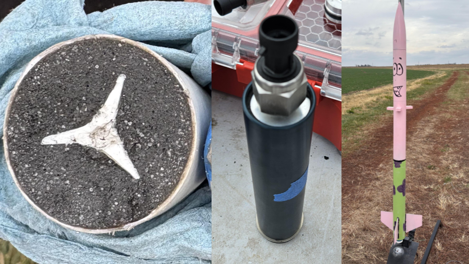

As part of the Rocket Propulsion (AAE 43900) curriculum at Purdue University, students are tasked with designing their own solid rocket motor with the intent of validating their ballistics models and trajectory estimations via a rocket launch. Each group's design was constrained such that the maximum estimated operating pressure of the motor could not exceed 800 psi and the propellant grain itself had to be 4.600" x 1.212". The motor would be manufactured by using the empty casing of a Loki Research H100-SF motor and filling it with a grain casted from ammonium perchlorate composite propellant (APCP) at Maurice J. Zucrow Laboratories.

To maximize volume loading, I proposed a three-point star grain geometry to my group. Testing a rocket motor made from a three-point star grain had a few benefits: it seemed like it would promise
high impulse, it was unique and had not been showcased in prior literature, and it subsequently would allow us to make a comparison to the other star-shaped grains with more points.
I utilized openMotor to simulate the behavior of the three-point star grain and found it would produce around 258.70 Ns of impulse for a burn time of 2.79 seconds while still providing a 1.390
safety factor for maximum chamber pressure. This meant that the motor would have a H91 classification. I was then able to export the ballistics data into a .csv file, where it could be imported
into MATLAB and OpenRocket for subsequent trajectory estimations. Initially, we had assumed that there would be insignificant amounts of wind on the day of the launch, and only simulated our
rocket's trajectory for 7.5 mph winds. This yielded an apogee prediction of 3374 ft, and our MATLAB model was able to get within 0.05% of OpenRocket's simulation for this wind speed.
To test our rocket motor, we constructed a LOC Precision PK-51 Fantom model rocket that utilized a custom recovery system designed by associates from Zucrow Laboratories since our rocket motor was
plugged. Components were joined together with epoxy, and the entire rocket was later spray painted to make it more visible and to add aesthetic appeal.
The launch date was moved twice due to complications and bad weather, but the rocket was finally launched on November 15 despite 20 mph winds. Because of the high winds, our rocket was only capable
of reaching an apogee of 1302 ft as opposed to the 3374 ft apogee we had predicted under the pretense of reasonable weather. Based on data obtained from a pressure transducer and altimeter in the rocket,
our maximum chamber pressure prediction was within 3% of the measured peak chamber pressure. Our trajectory prediction, when adjusted for 20 mph winds rather than 7.5 mph winds, was within 2%
of the apogee obtained from the onboard altimeter.
The most difficult aspect of the prediction was adjusting the coefficient of drag value for our rocket in our trajectory analysis. This is because on the day of the launch,
our supervisors recommended we glue makeshift airbrakes onto our rocket's airframe to mitigate lateral drift from the wind and make recovery easier. However, the properties and dimenions of these
airbrakes were unknown and were not ever measured since they had detached from the rocket during the flight. We decided to try to model the airbrakes as thick fins in OpenRocket, which allowed us
to get a reasonable estimate for the reference area and coefficient of drag of the rocket with the airbrakes attached. However, this seems to be the largest source of error for the MATLAB trajectory simulation.